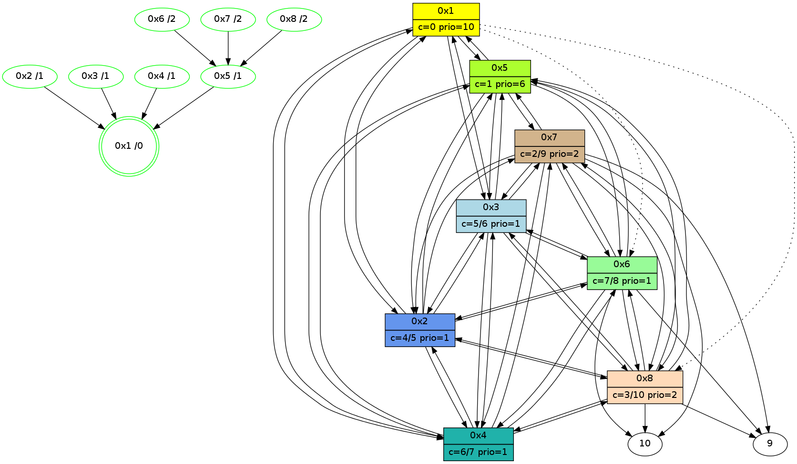

>> << IDX [start] -100 -25 -5 +0 +5 +25 +100 [420.199733973]
 Previous packets
----------------------------------------------------------------------
415.470909 beacon01(11f6) #0 coord=01,02,03,04,05,06,07,08,0a,09 cycle=688.0ms assoc
-- color-indic=1 64 1a d3
415.481078 beacon02(11f6) #0 coord=01,02,03,04,05,06,07,08,0a,09 cycle=688.0ms assoc 64 89 e2
415.491044 beacon03(11f6) #0 coord=01,02,03,04,05,06,07,08,0a,09 cycle=688.0ms assoc 64 f3 af
415.501045 beacon04(11f6) #0 coord=01,02,03,04,05,06,07,08,0a,09 cycle=688.0ms assoc 64 84 45
415.511045 beacon05(11f6) #0 coord=01,02,03,04,05,06,07,08,0a,09 cycle=688.0ms assoc 64 fe 08
415.521045 beacon06(11f6) #0 coord=01,02,03,04,05,06,07,08,0a,09 cycle=688.0ms assoc 64 70 df
415.531045 beacon07(11f6) #0 coord=01,02,03,04,05,06,07,08,0a,09 cycle=688.0ms assoc 64 0a 92
415.541049 beacon08(11f6) #0 coord=01,02,03,04,05,06,07,08,0a,09 cycle=688.0ms assoc 64 8f 03
415.615259 [Color(3) seq=13 @0:0 color=5/6 prio=1 >>1.@9,1.@a c=0,1,2,3,4,6,7]
415.616946 [Color(7) seq=13 @0:0 color=2 prio=2 >1.@9,1.@a >>1.@9,1.@a c=1,3,4,5,6,7;0]
415.623835 [Hello(1): seq=211 sym=5,3,2,4 asym=8,6 sysInfo=hasWarning,coloring-mode-on,ColoringModeRequestCalled stat=5:6,12,7,2/3:11,13,6,13/2:7,12,5,14/4:11,13,6,14/8:8,12,1,2/6:6,13,4,12]
415.626975 [STC(1) #0.25 new-neigh,stable,to-color d=0]
415.630197 [Color(1) seq=13 @0:0 color=0 prio=10 c=1,4,5,6;2,3,7]
415.675578 [Color(8) seq=13 @0:0 color=3 prio=2 >1.@9,1.@a >>1.@9,1.@a c=1,2,4,5,6,7;0]
415.689990 [STC(2)->1 #0.25 new-neigh,stable,to-color d=1]
415.691623 [Color(2) seq=13 @0:0 color=4/5 prio=1 >>1.@9,1.@a c=0,1,2,3,5,6,7]
415.720618 [STC(5)->1 #0.25 new-neigh,stable,to-color d=1]
415.722266 [Color(5) seq=13 @0:0 color=1 prio=6 >>1.@9,1.@a c=0,2,3,4,5,6,7]
415.724241 [STC(4)->1 #0.25 new-neigh,stable,to-color d=1]
415.726039 [Color(6) seq=13 @0:0 color=7 prio=1 >1.@a >>1.@9,1.@a c=1,2,3,4,5,6,8;0]
415.727813 [Color(4) seq=13 @0:0 color=6/7 prio=1 >>1.@9,1.@a c=0,1,2,3,4,5,7]
----------------------------------------------------------------------
416.259046 beacon01(11f6) #0 coord=01,02,03,04,05,06,07,08,0a,09 cycle=688.0ms assoc
-- color-indic=1 64 ce e6
416.269225 beacon02(11f6) #0 coord=01,02,03,04,05,06,07,08,0a,09 cycle=688.0ms assoc 64 5d d7
416.279181 beacon03(11f6) #0 coord=01,02,03,04,05,06,07,08,0a,09 cycle=688.0ms assoc 64 27 9a
416.289180 beacon04(11f6) #0 coord=01,02,03,04,05,06,07,08,0a,09 cycle=688.0ms assoc 64 50 70
416.299181 beacon05(11f6) #0 coord=01,02,03,04,05,06,07,08,0a,09 cycle=688.0ms assoc 64 2a 3d
416.309182 beacon06(11f6) #0 coord=01,02,03,04,05,06,07,08,0a,09 cycle=688.0ms assoc 64 a4 ea
416.319182 beacon07(11f6) #0 coord=01,02,03,04,05,06,07,08,0a,09 cycle=688.0ms assoc 64 de a7
416.329186 beacon08(11f6) #0 coord=01,02,03,04,05,06,07,08,0a,09 cycle=688.0ms assoc 64 5b 36
416.377698 [Hello(5): seq=211 sym=1,2,7,6,3,8,4 sysInfo=hasWarning,coloring-mode-on,ColoringModeIndicationCalled stat=1:3,13,8,0/2:7,14,6,13/7:8,11,5,10/6:3,14,4,12/3:9,13,6,12/8:5,12,1,2/4:9,14,5,12]
416.416349 [Hello(6): seq=211 sym=10,7,5,3,8,4,2,9 sysInfo=hasWarning,coloring-mode-on,ColoringModeIndicationCalled stat=10:5,8,15,7/7:0,12,5,10/5:11,11,7,2/3:12,13,5,13/8:6,14,3,3/4:1,13,2,12/2:10,12,4,11/9:8,11,5,3]
416.420660 [STC(6)->5-.->1 #0.25 new-neigh,stable,to-color d=2]
416.425119 [Hello(2): seq=211 sym=1,7,5,3,8,4,6 sysInfo=hasWarning,coloring-mode-on,ColoringModeIndicationCalled stat=1:2,14,8,0/7:4,11,5,10/5:6,14,7,2/3:5,13,4,11/8:4,13,1,2/4:7,12,6,13/6:12,14,5,12]
416.445109 [Hello(4): seq=211 sym=1,2,5,6,3,8,7 sysInfo=coloring-mode-on,ColoringModeIndicationCalled stat=1:2,13,9,0/2:9,14,7,13/5:12,11,7,2/6:2,13,6,12/3:11,13,4,11/8:5,13,0,2/7:10,11,5,10]
416.450479 [Hello(3): seq=211 sym=1,2,7,5,6,8,4 sysInfo=hasWarning,coloring-mode-on,ColoringModeIndicationCalled stat=1:3,14,8,0/2:8,13,5,14/7:5,11,5,9/5:4,14,5,2/6:1,14,6,12/8:4,13,1,2/4:11,13,7,13]
416.455288 [STC(3)->1 #0.25 new-neigh,stable,to-color d=1]
416.497661 [Hello(7): seq=211 sym=10,5,6,8,3,2,4,9 sysInfo=coloring-mode-on,ColoringModeIndicationCalled stat=10:8,8,1,8/5:14,13,7,2/6:14,14,5,12/8:9,14,4,3/3:10,12,6,12/2:10,12,4,11/4:11,12,1,10/9:4,13,5,3]
416.500244 [Hello(8): seq=211 sym=2,7,5,6,3,4,10,9 sysInfo=coloring-mode-on,ColoringModeIndicationCalled stat=2:3,12,5,13/7:0,12,5,10/5:13,13,6,2/6:14,13,4,11/3:9,12,5,12/4:8,13,4,12/10:9,8,15,7/9:13,11,14,2]
416.504541 [STC(8)->5-.->1 #0.25 new-neigh,stable,to-color d=2]
416.505885 [STC(7)->5-.->1 #0.25 new-neigh,stable,to-color d=2]
----------------------------------------------------------------------
417.047184 beacon01(11f6) #0 coord=01,02,03,04,05,06,07,08,0a,09 cycle=688.0ms assoc
-- color-indic=1 64 72 e3
417.057346 beacon02(11f6) #0 coord=01,02,03,04,05,06,07,08,0a,09 cycle=688.0ms assoc 64 e1 d2
417.067321 beacon03(11f6) #0 coord=01,02,03,04,05,06,07,08,0a,09 cycle=688.0ms assoc 64 9b 9f
417.077319 beacon04(11f6) #0 coord=01,02,03,04,05,06,07,08,0a,09 cycle=688.0ms assoc 64 ec 75
417.087319 beacon05(11f6) #0 coord=01,02,03,04,05,06,07,08,0a,09 cycle=688.0ms assoc 64 96 38
417.097320 beacon06(11f6) #0 coord=01,02,03,04,05,06,07,08,0a,09 cycle=688.0ms assoc 64 18 ef
417.107319 beacon07(11f6) #0 coord=01,02,03,04,05,06,07,08,0a,09 cycle=688.0ms assoc 64 62 a2
417.117324 beacon08(11f6) #0 coord=01,02,03,04,05,06,07,08,0a,09 cycle=688.0ms assoc 64 e7 33
417.185359 [Color(2) seq=14 @0:0 color=4/5 prio=1 >>1.@a c=0,1,2,3,5,6,7;8]
417.213168 [Hello(1): seq=212 sym=5,3,2,4 asym=8,6 sysInfo=hasWarning,coloring-mode-on,ColoringModeRequestCalled stat=5:7,13,8,2/3:12,13,7,13/2:8,14,6,14/4:12,14,7,14/8:9,13,2,2/6:7,14,5,12]
417.217579 [Color(1) seq=14 @0:0 color=0 prio=10 c=1,4,5,6;2,3,7]
417.233923 [Color(5) seq=14 @0:0 color=1 prio=6 >>1.@a c=0,2,3,4,5,6,7;8]
417.249312 [Color(6) seq=14 @0:0 color=7 prio=1 >>1.@9,1.@a c=1,2,3,4,5,6,8;0,9]
417.257557 [Color(3) seq=14 @0:0 color=5/6 prio=1 >>1.@a c=0,1,2,3,4,6,7;8]
417.266425 [Color(7) seq=14 @0:0 color=2/9 prio=2 >>1.@9,1.@a c=1,3,4,5,6,7,8;0,9]
417.272153 [Color(8) seq=14 @0:0 color=3 prio=2 >>1.@9,1.@a c=1,2,4,5,6,7,8;0,9]
417.292422 [Color(4) seq=14 @0:0 color=6/7 prio=1 c=0,1,2,3,4,5,7;8]
----------------------------------------------------------------------
417.835327 beacon01(11f6) #0 coord=01,02,03,04,05,06,07,08,0a,09 cycle=688.0ms assoc
-- color-indic=1 64 b6 ed
417.845485 beacon02(11f6) #0 coord=01,02,03,04,05,06,07,08,0a,09 cycle=688.0ms assoc 64 25 dc
417.855461 beacon03(11f6) #0 coord=01,02,03,04,05,06,07,08,0a,09 cycle=688.0ms assoc 64 5f 91
417.865462 beacon04(11f6) #0 coord=01,02,03,04,05,06,07,08,0a,09 cycle=688.0ms assoc 64 28 7b
417.875463 beacon05(11f6) #0 coord=01,02,03,04,05,06,07,08,0a,09 cycle=688.0ms assoc 64 52 36
417.885462 beacon06(11f6) #0 coord=01,02,03,04,05,06,07,08,0a,09 cycle=688.0ms assoc 64 dc e1
417.895463 beacon07(11f6) #0 coord=01,02,03,04,05,06,07,08,0a,09 cycle=688.0ms assoc 64 a6 ac
417.905466 beacon08(11f6) #0 coord=01,02,03,04,05,06,07,08,0a,09 cycle=688.0ms assoc 64 23 3d
417.943766 [Hello(8): seq=212 sym=2,7,5,6,3,4,10,9 sysInfo=coloring-mode-on,ColoringModeIndicationCalled stat=2:3,13,5,13/7:1,13,6,10/5:13,14,6,2/6:14,14,4,11/3:9,13,5,12/4:8,14,4,12/10:9,8,0,7/9:13,12,15,2]
417.973744 [Hello(6): seq=212 sym=10,7,5,3,8,4,2,9 sysInfo=hasWarning,coloring-mode-on,ColoringModeIndicationCalled stat=10:6,8,0,7/7:1,13,6,10/5:11,12,7,2/3:13,14,6,13/8:8,15,4,3/4:1,14,2,12/2:11,13,4,11/9:9,12,6,3]
418.016664 [Hello(4): seq=212 sym=1,2,5,6,3,8,7 sysInfo=coloring-mode-on,ColoringModeIndicationCalled stat=1:3,14,9,0/2:9,15,7,13/5:12,12,7,2/6:3,14,6,12/3:12,14,5,11/8:7,14,1,2/7:11,12,6,10]
418.029503 [Hello(5): seq=212 sym=1,2,7,6,3,8,4 sysInfo=hasWarning,coloring-mode-on,ColoringModeIndicationCalled stat=1:4,14,8,0/2:8,15,6,13/7:9,12,6,10/6:5,15,5,12/3:10,14,7,12/8:7,13,2,2/4:11,15,5,12]
418.058401 [Hello(2): seq=212 sym=1,7,5,3,8,4,6 sysInfo=hasWarning,coloring-mode-on,ColoringModeIndicationCalled stat=1:3,15,8,0/7:5,12,6,10/5:7,15,7,2/3:6,14,5,11/8:6,14,2,2/4:9,13,6,13/6:13,15,5,12]
418.063086 [Hello(3): seq=212 sym=1,2,7,5,6,8,4 sysInfo=hasWarning,coloring-mode-on,ColoringModeIndicationCalled stat=1:4,15,8,0/2:9,14,5,14/7:6,12,6,9/5:5,15,5,2/6:2,15,6,12/8:6,14,2,2/4:12,14,7,13]
418.087411 [Hello(7): seq=212 sym=10,5,6,8,3,2,4,9 sysInfo=hasWarning,coloring-mode-on,ColoringModeIndicationCalled stat=10:9,9,2,8/5:15,14,7,2/6:15,15,5,12/8:10,15,4,3/3:10,13,6,12/2:11,13,4,11/4:12,13,1,10/9:5,14,6,3]
----------------------------------------------------------------------
418.623462 beacon01(11f6) #0 coord=01,02,03,04,05,06,07,08,0a,09 cycle=688.0ms assoc
-- color-indic=1 64 0a e8
418.633645 beacon02(11f6) #0 coord=01,02,03,04,05,06,07,08,0a,09 cycle=688.0ms assoc 64 99 d9
418.643598 beacon03(11f6) #0 coord=01,02,03,04,05,06,07,08,0a,09 cycle=688.0ms assoc 64 e3 94
418.653599 beacon04(11f6) #0 coord=01,02,03,04,05,06,07,08,0a,09 cycle=688.0ms assoc 64 94 7e
418.663598 beacon05(11f6) #0 coord=01,02,03,04,05,06,07,08,0a,09 cycle=688.0ms assoc 64 ee 33
418.673598 beacon06(11f6) #0 coord=01,02,03,04,05,06,07,08,0a,09 cycle=688.0ms assoc 64 60 e4
418.683599 beacon07(11f6) #0 coord=01,02,03,04,05,06,07,08,0a,09 cycle=688.0ms assoc 64 1a a9
418.693602 beacon08(11f6) #0 coord=01,02,03,04,05,06,07,08,0a,09 cycle=688.0ms assoc 64 9f 38
418.740563 [Color(6) seq=15 @0:0 color=7/8 prio=1 c=1,2,3,4,5,6,8,9;0]
418.753343 [Color(2) seq=15 @0:0 color=4/5 prio=1 c=0,1,2,3,5,6,7;8,9]
418.758265 [Hello(1): seq=213 sym=5,3,2,4 asym=8,6 sysInfo=hasWarning,coloring-mode-on,ColoringModeRequestCalled stat=5:8,14,8,2/3:13,14,7,13/2:9,14,6,14/4:13,15,7,14/8:10,14,2,2/6:8,0,5,12]
418.761409 [Color(1) seq=15 @0:0 color=0 prio=10 c=1,4,5,6;2,3,7]
418.789288 [Color(3) seq=15 @0:0 color=5/6 prio=1 c=0,1,2,3,4,6,7;8,9]
418.830021 [Color(5) seq=15 @0:0 color=1 prio=6 c=0,2,3,4,5,6,7;8,9]
418.855287 [Color(4) seq=15 @0:0 color=6/7 prio=1 c=0,1,2,3,4,5,7;8,9]
418.868779 [Color(7) seq=15 @0:0 color=2/9 prio=2 c=1,3,4,5,6,7,8,9;0]
418.870660 [Color(8) seq=15 @0:0 color=3/10 prio=2 c=1,2,4,5,6,7,8,9;0]
----------------------------------------------------------------------
419.411598 beacon01(11f6) #0 coord=01,02,03,04,05,06,07,08,0a,09 cycle=688.0ms assoc
-- color-indic=1 64 3e f0
419.421770 beacon02(11f6) #0 coord=01,02,03,04,05,06,07,08,0a,09 cycle=688.0ms assoc 64 ad c1
419.431733 beacon03(11f6) #0 coord=01,02,03,04,05,06,07,08,0a,09 cycle=688.0ms assoc 64 d7 8c
419.441734 beacon04(11f6) #0 coord=01,02,03,04,05,06,07,08,0a,09 cycle=688.0ms assoc 64 a0 66
419.451734 beacon05(11f6) #0 coord=01,02,03,04,05,06,07,08,0a,09 cycle=688.0ms assoc 64 da 2b
419.461734 beacon06(11f6) #0 coord=01,02,03,04,05,06,07,08,0a,09 cycle=688.0ms assoc 64 54 fc
419.471735 beacon07(11f6) #0 coord=01,02,03,04,05,06,07,08,0a,09 cycle=688.0ms assoc 64 2e b1
419.481738 beacon08(11f6) #0 coord=01,02,03,04,05,06,07,08,0a,09 cycle=688.0ms assoc 64 ab 20
419.531379 [Hello(5): seq=213 sym=1,2,7,6,3,8,4 sysInfo=hasWarning,coloring-mode-on,ColoringModeIndicationCalled stat=1:5,15,8,0/2:9,0,6,13/7:10,13,6,10/6:5,0,5,12/3:11,15,7,12/8:7,14,2,2/4:11,0,5,12]
419.583449 [Hello(7): seq=213 sym=10,5,6,8,3,2,4,9 asym= sysInfo=hasWarning,coloring-mode-on,ColoringModeIndicationCalled stat=10:9,9,2,8/5:0,15,7,2/6:15,0,5,12/8:10,0,4,3/3:10,14,6,12/2:11,14,4,11/4:12,14,1,10/9:5,15,6,3]
419.600067 [Hello(2): seq=213 sym=1,7,5,3,8,4,6 sysInfo=hasWarning,coloring-mode-on,ColoringModeIndicationCalled stat=1:4,0,8,0/7:7,13,6,10/5:8,0,7,2/3:7,15,5,11/8:6,15,2,2/4:9,14,6,13/6:13,0,5,12]
419.603594 [Hello(3): seq=213 sym=1,2,7,5,6,8,4 sysInfo=hasWarning,coloring-mode-on,ColoringModeIndicationCalled stat=1:5,0,8,0/2:9,15,5,14/7:8,13,6,9/5:6,0,5,2/6:2,0,6,12/8:6,15,2,2/4:12,15,7,13]
419.619031 [Hello(8): seq=213 sym=2,7,5,6,3,4,10,9 sysInfo=coloring-mode-on,ColoringModeIndicationCalled stat=2:5,14,5,13/7:3,14,6,10/5:15,15,6,2/6:15,15,4,11/3:11,14,5,12/4:9,15,4,12/10:10,9,0,7/9:14,13,15,2]
419.643337 [Hello(6): seq=213 sym=10,7,5,3,8,4,2,9 sysInfo=hasWarning,coloring-mode-on,ColoringModeIndicationCalled stat=10:8,10,0,7/7:3,14,6,10/5:13,13,7,2/3:15,15,6,13/8:9,0,4,3/4:2,15,2,12/2:13,14,4,11/9:10,13,6,3]
419.657346 [Hello(4): seq=213 sym=1,2,5,6,3,8,7 sysInfo=coloring-mode-on,ColoringModeIndicationCalled stat=1:4,15,9,0/2:11,0,7,13/5:14,13,7,2/6:4,15,6,12/3:14,15,5,11/8:8,15,1,2/7:13,13,6,10]
419.661936 [STC(1) #0.26 new-neigh,stable,to-color d=0]